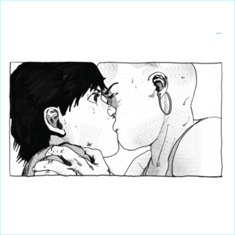
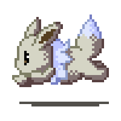

hello for the last time! this is my final volume :( i hope you enjoyed getting to hear me rant about whatever i'm stressing out about in the week. this is my first ever time designing a website (i'm sure you can tell) but i actually had a lot of fun doing this!
for this last volume, i wanted to talk about my experiences this semester. not just in making these volumes but just literally everything that happened to me.
i feel like i wasn't ready for this semester to actually start. i mean yes, i did have fun and i actually do like my work i was putting out but my god, when will i catch a break. especially the months like oct - dec. these months have always felt weird to me. besides the horrid depression that comes with these months, everything feels so sterile and stale but i guess it feels a little better to know that most people are also feeling like shit so im not alone yayyyy.
this semester has had so many ups and downs. for one, i really love some of the work i've been doing. creating my book about horror for my studio has truly been one of the best design experiences i have had so far and i'm really proud of it!!!
i'm the type of person to self critique everything i do so actually liking my work is a big step. i know this most artistic students deal with this so once again, glad to know i'm not alone in this but we're moving in the right direction so woohoo!
★ ★ ★ ★ ★ ★
i saw the new wicked movie recently and it made me think about the relationships i have in my life. especially my brother. we saw the movie together so it was kind of hard not to. we both ended up sobbing at this movie and i can't speak for him but i was crying because of how much the movie reminded me of him. the scene in which glinda and elphaba are singing "For Good" to each other, which is essentially is them saying goodbye to each other as this is the last time they'll see each other but also recognizing the lasting impact they have had each other and how much they've changed each other. growing up and still to this day, my brother is my best friend. we live together here in the city so watching him grow into his own person is really great to watch. love u cam!!!!!
★ ★ ★ ★ ★ ★
oh also this semester, i got a dog. well it's my brothers dog but same thing. his name is pierre and he's such a little baby, i love him. i can't believe i'm just now mentioning this. oops.
ok anways, to wrap this up, thank you so much for checking out these volumes and being on this journey with me. i hope you enjoy and who knows, maybe i'll make a another website one day when i actually know what i'm doing! it's okay, we all start somewhere. see you soon!
almost forgot! the last song of the week! this week, my favorite song is "Blue Spring" by Nathan Micay. i feel like this is almost a full circle moment. i started these volumes with an ambient track and now im ending it with one. wowwwwwwwwwww
listen below!

